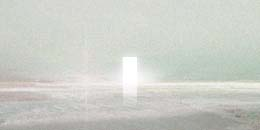

它不是「我們的海」，而是「鏡之海」。 你在大霧中沿著海岸探索，然而除了恐懼未知外，別無他物。
旅人配對測試 · 共 8 題 測試結果將協助遊戲開發了解玩家情感類型分佈， 作為美術風格與遊戲體驗設計的參考依據。 Contact Info : siohuhu.studio@gmail.com
下載後可分享至 Instagram · LINE · 小紅書 Facebook 分享需先部署至 GitHub Pages